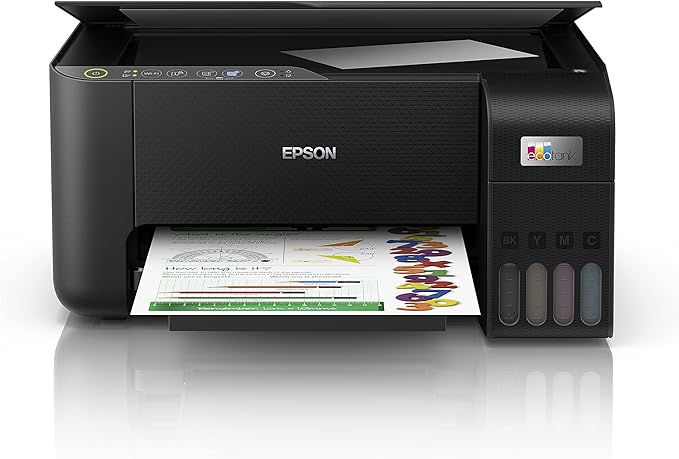
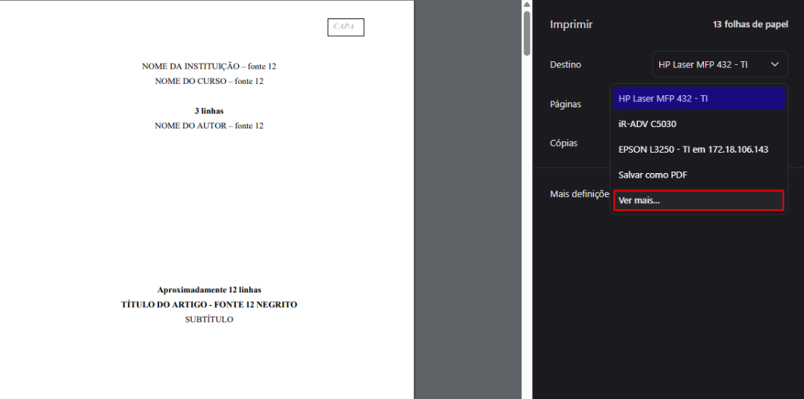
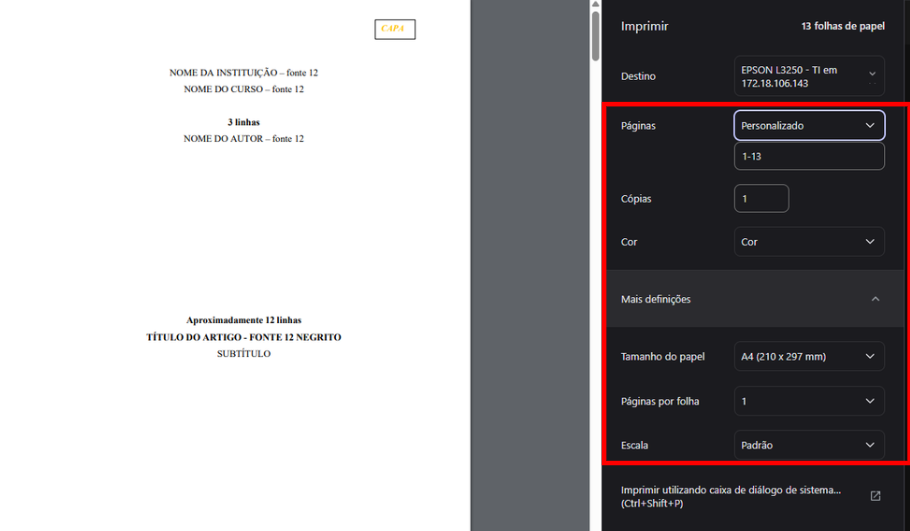
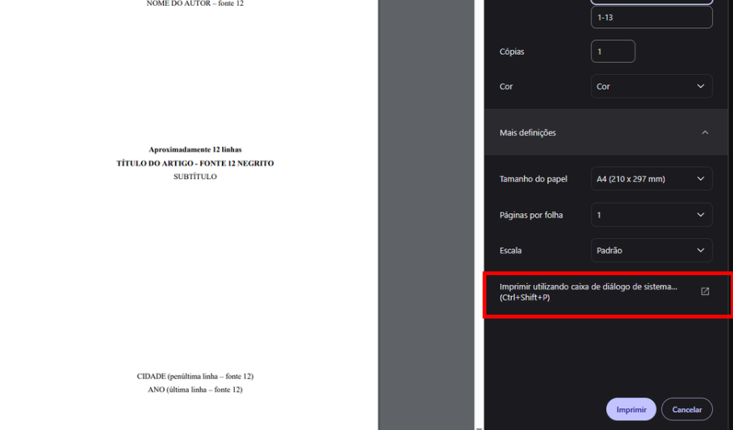
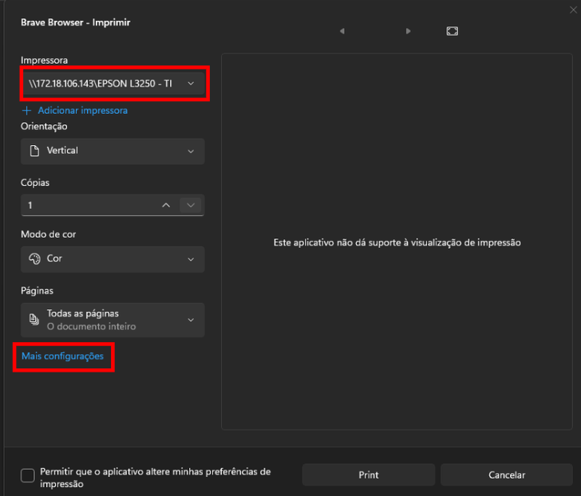
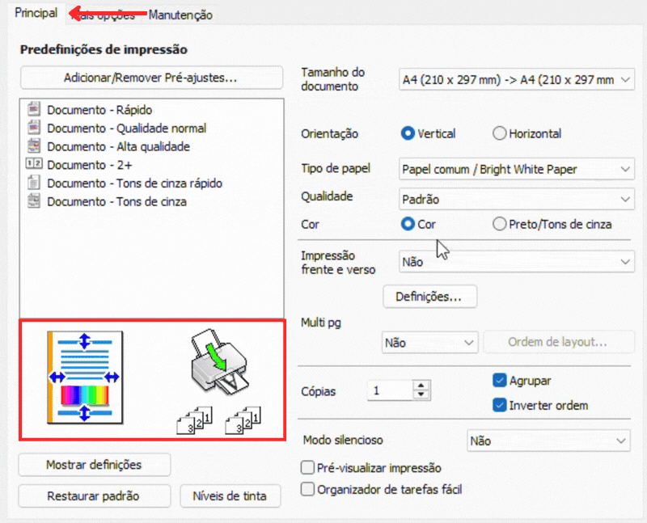
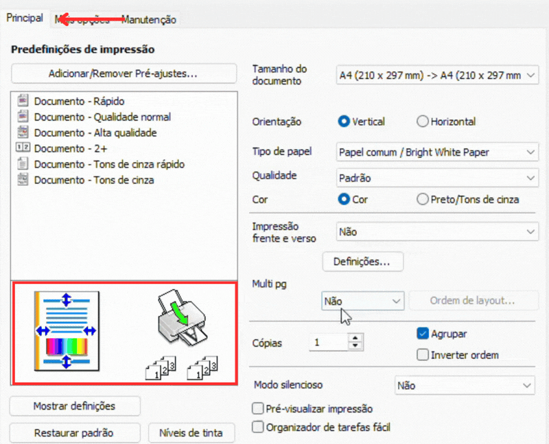
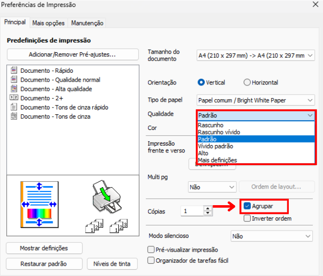
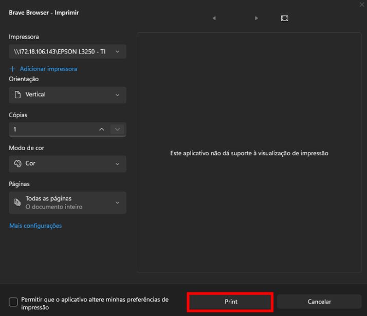

O diretório atual não traz capturas da instalação. O fluxo abaixo resume a instalação correta.
Abrir o instalador
Baixe o driver, execute o instalador e aceite os termos.
Escolher a conexão
Selecione Wi‑Fi para rede escolar ou USB para uso local.
Selecionar a impressora
Escolha a Epson L3250 Series e conclua com página de teste.
Iniciando a Impressão
Com seu arquivo aberto clique no ícone de impressora ou use o atalho Ctrl + P. O primeiro passo é selecionar a impressora correta no campo "Destino".

Caso a EPSON L3250 não apareça de imediato, clique em Ver mais... e selecione-a na lista.

Impressão Padrão
Se você deseja fazer uma impressão comum, basta clicar no botão Imprimir.
- Páginas: No personalizado você pode especificar quais páginas imprimir. "1-5, 7" para imprimir da página 1 até a 5 e também a página 7, pulando a 6.
- Tamanho do Papel: A impressora HP 432 geralmente utiliza o tamanho A4.
- Frente e Verso: Escolha "Borda longa" para virar a página como um livro.

Impressão Avançada
Se precisar mudar a bandeja, agrupar cópias ou ajustar a qualidade, clique em Imprimir utilizando a caixa de diálogo de sistema para abrir o painel avançado da EPSON.

Selecione a impressora de novo e clique em Mais Configurações.

Preferências da EPSON (Principal)
Na aba Principal, você controla as configurações mais básicas. Observe os exemplos abaixo:
• Orientação do Papel: Vertical (Retrato) para textos comuns ou Horizontal(Paisagem) para planilhas e certificados.
• Cor da Impressão: Cor para impressões coloridas ou Preto/Tons de cinza para usar apenas a tinta preta, para economizar nas impressões de textos.
• Frente e Verso (Manual): Escolha "Borda longa" para virar a página como um livro.
Atenção: A L3250 faz isso de forma manual. Ela vai imprimir todas as páginas ímpares primeiro e depois mostrar um aviso na tela pedindo para você recolocar as folhas na bandeja para imprimir o verso.

Qualidade, Múltiplas Páginas e Agrupamento
Ainda na aba Principal, você pode ajustar:
• Multi pg (Múltiplas páginas): Essa função permite encolher 2, 4 ou mais páginas do seu arquivo para caberem juntas em uma única folha A4./p>

• Qualidade: Para melhor qualidade, use Alto.
• Agrupar:
Se você for imprimir 3 cópias de uma prova de 5 páginas:
• Marcado: A impressora entrega as provas prontas (Páginas 1 a 5, depois 1 a 5 de novo).
• Desmarcado: A impressora solta três páginas "1", depois três páginas "2", obrigando você a separar tudo na mão depois.

Finalização
Após realizar todos os ajustes necessários, clique no botão OK para fechar as preferências avançadas e, de volta à janela principal, clique em Print (ou Imprimir) para enviar o documento para a impressora.
